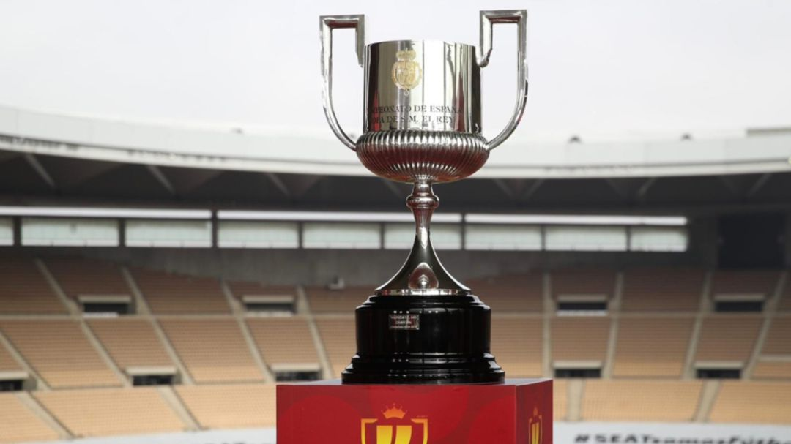

COPA DEL REY

El Campeonato de España-Copa de Su Majestad el Rey, más conocido por sus acepciones simples de Copa del Rey se inicio en 1903 y la disputan actualmente 116 Clubes
RANKING DE MAXIMOS GANADORES
| EQUIPO | COPAS |
|---|---|
| Barcelona | 31 |
| Athletic Club | 23 |
| Real Madrid | 19 |
| Atletico Madrid | 10 |
| Valencia | 8 |
| Real Zaragoza | 6 |
| Sevilla | 5 |
| Espanyol | 4 |
| Real Union | 4 |
| Real Sociedad | 3 |
| Betis | 3 |
| Deportivo la Coruña | 3 |
| Arenas | 1 |
| Mallorca | 1 |
TODOS LOS GANADORES
| AÑO | EQUIPO | |
|---|---|---|
| 2021/22 | Betis (3) | |
| 2020/21 | Barcelona (31) | |
| 2019/20 | Real Sociedad (3) | |
| 2018/19 | Valencia (8) | |
| 2017/18 | Barcelona (30) | |
| 2016/17 | Barcelona (29) | |
| 2015/16 | Barcelona (28) | |
| 2014/15 | Barcelona (27) | |
| 2013/14 | Real Madrid (19) | |
| 2012/13 | Atletico Madrid (10) | |
| 2011/12 | Barcelona (26) | |
| 2010/11 | Real Madrid (18) | |
| 2009/10 | Sevilla (5) | |
| 2008/09 | Barcelona (25) | |
| 2007/08 | Valencia (7) | |
| 2006/07 | Sevilla (4) | |
| 2005/06 | Espanyol (4) | |
| 2004/05 | Betis (2) | |
| 2003/04 | Real Zaragoza (6) | |
| 2002/03 | Mallorca (1) | |
| 2001/02 | Deportivo la Coruña (2) | |
| 2000/01 | Real Zaragoza (5) | |
| 1999/00 | Espanyol (3) | |
| 1998/99 | Valencia (6) | |
| 1997/98 | Barcelona (24) | |
| 1996/97 | Barcelona (23) | |
| 1995/96 | Atletico Madrid (9) | |
| 1994/95 | Deportivo la Coruña (1) | |
| 1993/94 | Real Zaragoza (4) | |
| 1992/93 | Real Madrid (17) | |
| 1991/92 | Atletico Madrid (8) | |
| 1990/91 | Atletico Madrid(7) | |
| 1989/90 | Barcelona (22) | |
| 1988/89 | Real Madrid (16) | |
| 1987/88 | Barcelona (21) | |
| 1986/87 | Real Sociedad (1) | |
| 1985/86 | Real Zaragoza (3) | |
| 1984/85 | Atletico Madrid (6) | |
| 1983/84 | Athletic Club (23) | |
| 1982/83 | Barcelona (20) | |
| 1981/82 | Real Madrid (15) | |
| 1980/81 | Barcelona (19) | |
| 1979/80 | Real Madrid (14) | |
| 1978/79 | Valencia (5) | |
| 1977/78 | Barcelona (18) | |
| 1976/77 | Betis (1) | |
| 1975/76 | Atletico Madrid (5) | |
| 1974/75 | Real Madrid (13) | |
| 1973/74 | Real Madrid (12) | |
| 1972/73 | Athletic Club (22) | |
| 1971/72 | Atletico Madrid (4) | |
| 1970/71 | Barcelona (17) | |
| 1969/70 | Real Madrid (11) | |
| 1969 | Athletic Club (21) | |
| 1967/68 | Barcelona (16) | |
| 1966/67 | Valencia (4) | |
| 1965/66 | Real Zaragoza (2) | |
| 1964/65 | Atletico Madrid (3) | |
| 1963/64 | Real Zaragoza (1) | |
| 1962/63 | Barcelona (15) | |
| 1961/62 | Real Madrid (10) | |
| 1960/61 | Atletico Madrid (2) | |
| 1959/60 | Atletico Madrid (1) | |
| 1958/59 | Barcelona (14) | |
| 1958 | Athletic Club (20) | |
| 1957 | Barcelona (13) | |
| 1956 | Athletic Club (19) | |
| 1955 | Athletic Club (18) | |
| 1954 | Valencia (3) | |
| 1952/53 | Barcelona (12) | |
| 1952 | Barcelona (11) | |
| 1951 | Barcelona (10) | |
| 1949/50 | Athletic Club (17) | |
| 1948/49 | Valencia (2) | |
| 1947/48 | Sevilla (3) | |
| 1947 | Real Madrid (9) | |
| 1946 | Real Madrid (8) | |
| 1944/45 | Athletic Club (16) | |
| 1944 | Athletic Club (15) | |
| 1943 | Athletic Club (14) | |
| 1942 | Barcelona (9) | |
| 1941 | Valencia (1) | |
| 1940 | Espanyol (2) | |
| 1939 | Sevilla (2) | |
| 1936 | Real Madrid (7) | |
| 1935 | Sevilla (1) | |
| 1934 | Real Madrid (6) | |
| 1933 | Athletic Club (13) | |
| 1932 | Athletic Club (12) | |
| 1931 | Athletic Club (11) | |
| 1930 | Athletic Club (10) | |
| 1928/29 | Espanyol (1) | |
| 1928 | Barcelona (8) | |
| 1927 | Real Union (4) | |
| 1926 | Barcelona (7) | |
| 1925 | Barcelona (6) | |
| 1924 | Real Union (3) | |
| 1923 | Athletic Club (9) | |
| 1922 | Barcelona (5) | |
| 1921 | Athletic Club (8) | |
| 1920 | Barcelona (4) | |
| 1919 | Arenas Club (1) | |
| 1918 | Real Union (2) | |
| 1917 | Real Madrid (5) | |
| 1916 | Athletic Club (7) | |
| 1915 | Athletic Club (6) | |
| 1914 | Athletic Club (5) | |
| 1913 II | Barcelona (3) | |
| 1913 I | Real Union (1) | |
| 1912 II | Deportivo la Coruña (1) | |
| 1912 I | Barcelona (2) | |
| 1911 | Athletic Club (4) | |
| 1910 II | Athletic Club (3) | |
| 1910 I | Barcelona (1) | |
| 1909 | San Sebastian (1) | |
| 1908 | Real Madrid (4) | |
| 1907 | Real Madrid (3) | |
| 1906 | Real Madrid (2) | |
| 1905 | Real Madrid (1) | |
| 1904 | Athletic club (2) | |
| 1903 | Athletic club (1) |